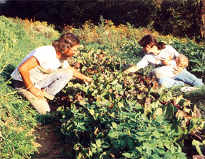
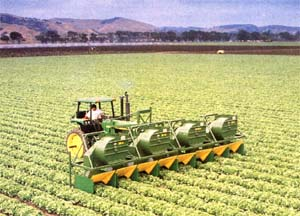

Organic agriculture finally has the chance to pass from a movement to an industry-if it can cope with its problems.
IT'S THE FIRST NATIONAL CONFER ENCE on Organic/Sustainable Agriculture in Washington, D.C. Downstairs, a youngbuck bureaucrat discusses the proposed 1990 farm bill. Several audience members ask detailed questions about multiyear setbacks and commodity cover-crop support. Meanwhile, one floor up, another speaker tells an old joke about two guys who read Mother Earth News, decided to become organic chicken farmers, then planted their chicks-upside down. Nobody laughs.
The "old" organic grower. market gardeners who foil so hard they can't stop weeding long enough to nurse.
The different responses in the two conference rooms capture the spirit of the times. Organic is no longer the sole province of alternative back-to-the-landers and "health foodists." No, the 0 word has come out of the closet and into mainstream acceptability. Its growers are no longer just back-sore market gardeners who handpick every bean beetle, but also 700-acre strawberry producers who suck up pests with six-bed-wide monster vacuums.
Add in such newsworthy events as last spring's news blitz on apples with Alar, contaminated Chilean grapes, and Meryl Streep speaking out on pesticides, and organic food has become a hot media topic. A hot consumer topic as well: Demand now outstrips supply by 10 to one. A $3-billion-a-year industry, it's the fastest-growing specialty sector in agriculture. Major supermarket chains are rushing to get pesticide-free produce on their shelves. Bankers, venture capitalists, large food brokers and Japanese exporters are chasing the organic gold rush.
As a result, organic agriculture today has its greatest opportunity ever to have a positive impact on our nation's food-consuming and food-growing patterns. But opportunity carries risk: This budding industry may also fall flat on its face. Producer fraud, marketplace confusion and dilution of standards could all lead to disastrous setbacks. The term organic may wind up as meaningless a food label as "natural" (enjoyed any "natural" margarine lately?). These are organic's heydays-and the days of its most crucial testing.
Of all the questions facing the industry, the two biggest are, What is an organic food? and How does a shopper know that a so-called organic food item really is organic? The first question sounds deceptively simple. Most people know that an organic crop is one raised without any insecticides, herbicides, fungicides or synthetic fertilizers. But zoom in on the particulars and the image begins to blur. What if the land was treated with one of those "cide sisters" the year before, and some residues still remain in the soil? How about if a pesticide sprayed on an adjacent field drifts over onto the organic crops? Exactly which fertilizers are natural, and which chemical?
The second question stirs even murkier waters. An organic carrot looks like an inorganic carrot. The only obvious difference is the price: 15%, 30%, maybe even 100%o more. So how do shoppers know they are getting what they pay for-and-nothing else? Won't some conventional growers be tempted to lie and pocket the extra income?
The answer to both questions hinges on one word: certification. There needs to be a mechanism both for strictly defining organ ic and for ensuring compliance with that definition. As one California grower said, "Certification is the only way to turn this movement into an industry."
And that's where the real confusion begins. A bewildering potpourri of certification groups and standards have sprung up to address these concerns. For instance, two years ago the California supermarket chain Raley's began selling produce that was certified by NutriClean, an independent laboratory, as having "no detected pesticide residue." The promotion was a tremendous success: "We've never had an ad campaign as successful as this one," a store spokesperson said. Since then supermarket chains as far east as New York have gotten in on the act, spending as much as $20,000 a month to get some of their produce certified as clean by NutriClean.
O rganic's marriage of healthy food and healthy environment is currently intact-but under attack.
The "new" organic grower: megafarmers who use $80,000 Salad Vacs to suck pests off eight rows at once.
But are NutriClean grapes, carrots and potatoes organic? Many people are reluctant to say so. Bob Scowcroft is executive director of California Certified Organic Farmers (CCOF), the country's oldest and largest certification group. (CCOF's 500 growers raise 84 crops, from almonds to worms, on farms ranging from 1/10 acre to 2,630 acres.) Scowcroft, who calls himself "one of the first organic bureaucrats," is quick to point out that pesticide-free does not equal organic. "What about growing practices? Does the grower mine or build the soil? Is he working toward a sustainable system or using techniques that have harmful effects on the environment?"
Stan Rhodes, president of NutriClean, concedes the difference: "NutriClean does not certify growers; we certify fields of food."
He doesn't deny that his growers may use a pesticide, but he claims, "If they use it, we test for it." He even readily admits that food his company approves isn't absolutely clean. "No food is. We're not living in the Garden of Eden anymore. When you test down to levels of five and six parts per billion, you'll find residues in all food." Still, Rhodes's state-of-the-art testing technology and strict standards offer much greater assurance of food purity than do our government testing programs (see the sidebar "Is Our Food Safe?"). But if that's all there is to certification, the issue is trivialized to a game of Beat the Test. To address the larger questions of growing practices, most other certifiers take a broader approach.
They do some product testing but also inspect farms, delineate strict standards for which soil amendments and pest controls are considered organic, and demand strict record keeping of every field and storage practice. CCOF members, for instance, must hew to its 20-page Certification Handbook, an admirably specific guide that even lists which of 165 different materials may be used on crops. The group also requires that before being certified, all applicants must go through a one-year transition-a soil cleansing and soil-building period during which the grower uses only organic methods.
Grower-based groups like CCOF are doing their best to maintain integrity. Indeed, it's striking to attend one of their meetings and hear farmers suggest increasing their record-keeping paperwork. As Idaho grower Dick Ihler puts it, "If you spit on the ground, you'd better write it down!" The reason is obvious. They want to protect not only consumers but also themselves from conventional growers who might reduce pesticide use and then declare their foods organic.
But what happens when someone cheats? CCOF had to face that challenge last summer: A food distributor, Pacific Organics (PO), was marketing organic carrots during the off-season, when no one else had any to sell. Someone from a rival company infiltrated PO and, sure enough, both found and photographed employees repackaging con ventional carrots into organic-labeled bags. The Great Carrot Caper made headlines all over the state. CCOF then pressured the California Department of Health Services to act, and Pacific Organics was shut down.
Organic advocates felt redeemed; the Carrot Caper proved that the industry can successfully police itself. But that conclusion seems overstated. A better one might be that certification groups generally do a good job of policing their members-and may catch some nonmember violations as well.
To widen the range of enforcement, two states, Washington and Texas, do their own certifying. Jim Hightower, Texas's colorful commissioner of agriculture, has put together a very promising Texas Certified Organic program to set and enforce standards for those growers he likes to call "the freedom fighters of agriculture."
All in all, there are now more than 40 organic-certification groups in America. Most are run by growers. CCOF, Minnesota Organic Growers and Buyers Association (OGBA) and the northeast chapters of the National Organic Farmers Association (NOFA) are prominent examples. The proliferation of groups, the differences between respective standards, and the potential for confusing the food-buying public are all making this an intolerable situation. Clearly, the organic industry needs to move through these growing pains and come to a national consensus. But how?
Isn't it obvious that the federal government needs to get involved? Maybe not. Senator Fowler of Georgia has twice introduced an organic bill, but this document would leave the actual definition of the term organic to the secretary of agriculture. Organic growers cringe at the dangerous prospect that each ag secretary could set the standards as loosely as he or she wants.
Besides, we all know how muddleheaded federal enforcement can be. When Walnut Acres first tried to market a peanut butter in which peanuts were the sole ingredient, the government made the whole-foods company call their product "imitation" peanut butter because it didn't contain any sugar or oil. Boyd Foster of Arrowhead Mills in Texas remembers what happened last summer when he tried to use beneficial flying insects instead of malathion to control bug pests in stored rye: "The federal marshal seized it." As this demonstrates, bad federal regulation is probably worse than none at all.
One grower summed up organic record keeping by saying, "If you spit on the ground, you'd better write it down....
Maybe the organic industry can get its own multiheaded act together. It is trying. The Organic Foods Production Association of North America (OFPANA), a trade group, is working with the various certification groups to create "a threshold definition of organic," a way to accredit certification groups-thereby answering the critics' question, Who certifies the certifiers?-and reciprocity agreements between groups. Judging by the initial pace of that effort, though, OFPANA-led unity may be a few crop rotations down the road.
Perhaps California, the first state to adopt any organic law (back in 1979), can lead the way to an overall standard with the new organic law it's considering. CCOF's Scowcroft points out that the new legislation has been carefully crafted using input from grower groups. "It's 26 pages long. Our old law is just four, while Senator Fowler's bill was just three-quarters of a page."
The proposed bill mandates a three-year transition period before any grower can be certified "organic." To keep that restriction from being a disincentive for conventional farmers to go organic, under the bill some produce could be certified "transition to organic" and, as a result, would probably get a slight markup in the marketplace. The law would also set up an advisory commission to rule on allowable materials.
Perhaps that California law, if passed, will become a model for a good national law. However order is brought to the organic industry, the sooner it comes the better. Right now, the industry is under great stress. Ever since Alar Sunday (the organic industry's term for the breakthrough day on which "60 Minutes" brought national publicity to pesticides in food), prices have skyrocketed. It's probably only fitting that organic food costs a bit more than conventional food. As North Dakota grain and livestock farmer Fred Kirschenmann puts it, "Organic prices reflect the real costs of producing food. With most food we defer the costs by borrowing from the environment and the future." A fair premium for organic produce may also help keep more small family growers on the farm. But overly high premiums will drive away long-term customers and will increase food fraud.
It's hard to keep up with grower demand too. CCOF fields 100 calls a day from farmers wanting to go organic on at least part of their land. Rodale's New Farm magazine set up a telephone hot line for farmers who wanted to grow with fewer chemicals, and the company received so many phone calls (500 in the first 48 hours) that it couldn't afford to continue the service.
But the biggest challenge of all is to hang onto the broader implications of the organic ideal itself. Most growers are not striving just for a specialty product-that is, residuefree food-but for sustainable, environmentally sound farming practices as well. Right now, agriculture is a seriously destructive force to the earth's health. Each year, 22.3 billion pounds of nitrogen fertilizers and 850 million pounds of pesticides are dumped on American farm soil. Almost half of our counties are experiencing agricultural pollution (77 different farm chemicals have been detected in well water in 39 states). Erosion is so bad that in some rural areas country bridges have been buried under washeddown dirt, and interstates covered with windborne soil. As environmentalist Barry Commoner notes, "If organic agriculture expands, it can become a banner to lead all of us to a sensible way to use resources and clean up the environment." Through the dedicated efforts of the established certification groups and those pioneers who stuck to their ideals through all those lean "movement" days, organic's marriage of healthy food and healthy environment is currently intact. In Texas, you can hear Jim Hightower proclaim, "We have adopted soil and water as two of our constituencies in the. Texas Department of Agriculture." In the farm state Iowa, the government now taxes pesticides and nitrogen fertilizers to fund a research center for sustainable agriculture. In California, Paul Buxman-his son stricken by leukemia, probably induced by farm chemicals organizes the California Clean Growers Association to help his neighbors reduce their pesticide usage. But there are ominous overtones coming from larger agricultural interests. The produce industry's bible, The Packer, has urged organic advocates to dump the "excess baggage" of purist dogma. "The future looks bright for organics. It will be even brighter if the movement is replaced [italics added] by a vibrant new industry." Farm journal recently blasted the very concept of sustainable agriculture. After saying the phrase "makes my teeth hurt," Editor Earl Ainsworth proclaimed that "the only sustainable agriculture is profitable agriculture. Short and sweet." United Fresh Fruit and Vegetable Association, a major food trade group, has formed a task force on organic legislation-but hasn't included anyone currently involved in certification.
As CCOF staffer Mark Lipson warns, "We are entering a landscape dominated by the multinational institutions and entities committed to the status quo. Maintaining control of the [organic] `bandwagon' will require decisive action to hold onto the steering wheel while bigger and stronger players come on board."
Organic's fate is on the line. Scowcroft has written his group's growers, "Will we rise to the occasion and shape history according to our long-held philosophical beliefs?" But the rest of us can also play a vital role in shaping the future. We can join and support our local organic growers' group. We can encourage our elected representatives to continue funding the national research program on low-input sustainable agriculture (LISA). We can support efforts to make the 1990 farm bill more responsive to ecological farming (nowadays growers who rotate crops or who plant soil-building cover crops currently lose program income). We can keep abreast of possible state and national organic legislation.
And there's one simple, close-to-home way to show support: Buy organic food. Every time you and I purchase organic broccoli or apples that have been either certified by an established group or raised by a known local grower, we are not only eating food that is better for our bodies, we are supporting farming that is better for the planet. Our dollar is casting a loud and explicit vote for sustainable agriculture. And isn't that a beautiful, two-fold opportunity-to use our food dollars to do both ourselves and our earth a service?
|
 PAT STONE |
 PHOTO COURTESY OF NEW FRM MAGAZINE/CARL DONEY |
|